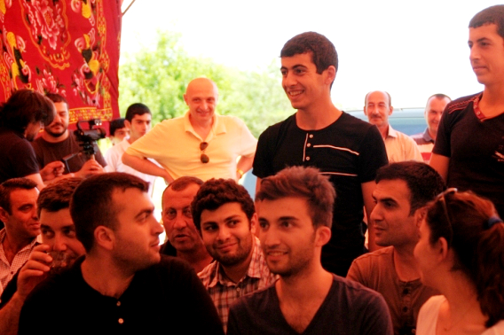
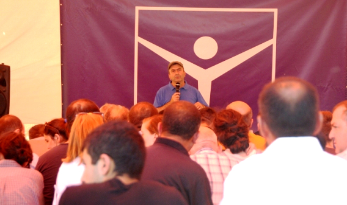
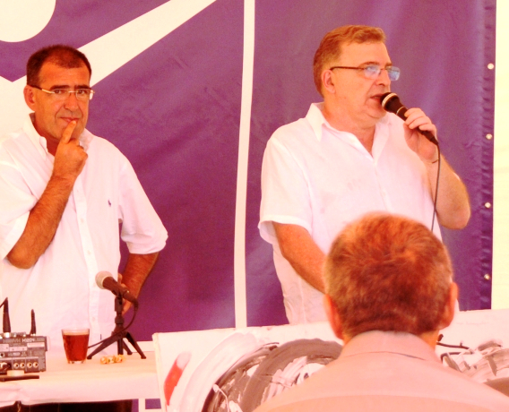
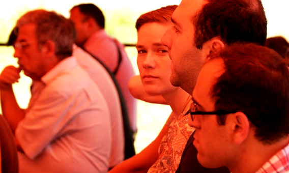
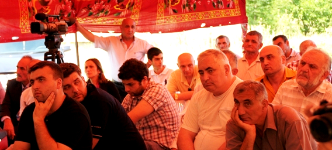
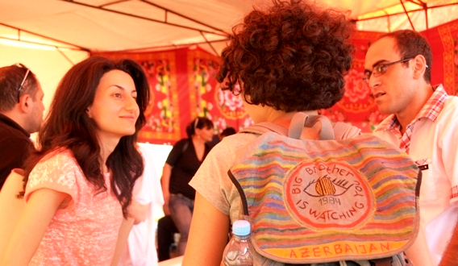
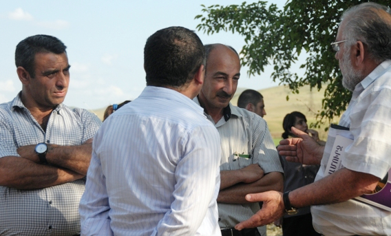
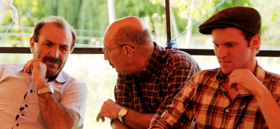
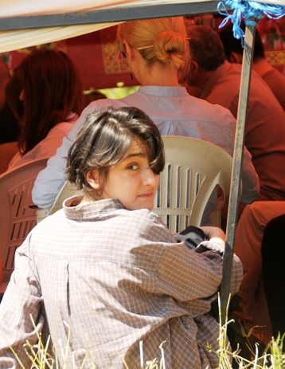

ЕВРОПЕЙСКАЯ ИНТЕГРАЦИЯ КАК МЕХАНИЗМ ТРАНСФОРМАЦИИ КОНФЛИКТОВ. ГРУЗИНСКИЙ ОПЫТ
13 июня 2015
Текали - стык границ трех южнокавказских республик
Гражданское слушание с участием жителей Баку, Еревана, Тбилиси, Марнеули, Ноемберяна, Казаха и приграничных сел трех республик.
Ассоциация «Текали», Грузия
Кавказский Центр Миротворческих Инициатив, Армения
Фонд гражданской интеграции, Грузия
Региональный Центр Стратегических исследований, Грузия
Бакинская Школа Журналистики, Азербайджан
Казах-Акстафинский филиал Хельсинской Гражданской Ассамблеи Азербайджана
В рамках проекта «Символический суд по правам человека» при поддержке Национального Фонда Поддержки Демократии (США)
Фото: Ася Халатян
Текали - стык границ трех южнокавказских республик
Гражданское слушание с участием жителей Баку, Еревана, Тбилиси, Марнеули, Ноемберяна, Казаха и приграничных сел трех республик.
Ассоциация «Текали», Грузия
Кавказский Центр Миротворческих Инициатив, Армения
Фонд гражданской интеграции, Грузия
Региональный Центр Стратегических исследований, Грузия
Бакинская Школа Журналистики, Азербайджан
Казах-Акстафинский филиал Хельсинской Гражданской Ассамблеи Азербайджана
В рамках проекта «Символический суд по правам человека» при поддержке Национального Фонда Поддержки Демократии (США)
Фото: Ася Халатян
В 90-ые годы перед Грузией стояла такая же задача, как и перед другими республиками бывшего Советского Союза: стать из части большой страны независимым государством, и в тоже время сделать социальную трансформацию - от советского общества в общество, которое признает ценности свободного рынка, демократии, и так далее. К сожалению, эта задача оказалась очень сложной для Грузии, впрочем, как и для большинства стран бывшего Советского Союза, и это сказалось во всех сферах жизни, в том числе в сфере предотвращения и урегулирования конфликтов. Наше общество, правительство – как угодно можно говорить, - наша страна не оказалась способной решать свои проблемы. Наличие конфликтов, конфликтов интересов – естественное состояние любого общества, но вопрос в том, как это общество преодолевает конфликт. Этим измеряется, так сказать, зрелость общества. И нам это не удалось. У нас, как вам известно, было много конфликтов, в том числе до сих пор не урегулированные конфликты с Абхазией и Южной Осетией. Это одна сторона нашей темы. С другой стороны, недавно, как раз в этом месяце будет год, как Грузия подписала Соглашение об ассоциации с Европейским Союзом, которое, по моему мнению, является очень важным документом, потому что соглашение покрывает все сферы общественно-политической жизни, гармонирует все эти сферы, что очень важно для Грузии, страны, которая находится в процессе трансформации. Вы часто услышите в нашем обществе вопрос, какую страну мы строим, какая у нас идеология, для советского человека это всегда было важно – иметь идеологию. И вот есть документ, который может быть ответом на вопрос, какую страну мы строим. Я еще раз повторю, этот документ охватывает все стороны общественной и политической жизни страны и поэтому он очень важен, также и в той части, которая касается урегулирования конфликтов.
Хочу сказать, что к партнерству с Евросоюзом Грузия принесла и свое «богатство конфликтами», и изменившаяся после 2008 года реальность, особенно признание Россией Южной Осетии и Абхазии, повлияла на подходы Грузии, что отразилось в соответствующих документах, которые касаются подходов в урегулировании конфликтов. Сразу же после войны Грузия приняла Закон об оккупированных территориях, где территории Абхазии и Южной Осетии признаются оккупированными со стороны Российской Федерации и есть ссылка на то, что Россия не выполнила договор, который был заключен между Путиным и Саркози и между Саркози и Саакашвили. Этот закон, который был реакцией Грузии на события 2008 года, запрещает экономическую деятельность на территории Абхазии и Южной Осетии, определяет возможность посещения этих территорий гражданами иностранных государств, регулирует другие вопросы. В частности запрещается въезд (и выезд соответственно) в Абхазию и Южную Осетию со всех сторон, кроме как с Зугдидского района, в случае Абхазии, и Горийского района, в случае Южной Осетии. В законе закреплено также наказание в случае нарушения этой статьи. Один из грузинских чиновников, который работал над текстом этого закона, метафорически описал его смысл: Это была реакция Грузии на пожар, и Грузия закрыла все окна и двери.

Позже в Грузии была выработана Государственная Стратегия в отношении оккупированных территорий, которая по идее созвучна подходу Евросоюза, и подход этот выражается в двух словах: вовлечение без признания. Грузия не признает независимость Южной Осетии и Абхазии, но в то же время ведет политику их вовлечения, направленную на то, чтобы эти территории не были изолированы о внешнего мира. После принятия стратегии, в 2010 году, были разработаны Правила работы (Modalities) для международных организаций в Абхазии и Южной Осетии, которые устанавливали механизмы имплементации этой стратегии и касались проектов, которые должны были улучшить качество жизни граждан, дать им возможность участвовать в проектах сферы образования, здравоохранения и других социальных проектах.
Если использовать ту же метафору, то можно сказать, что цикл «открывания окон и дверей», был в обратном порядке ограничен специальным процедурным документом, который опять-таки закрывал возможности. Очень многие международные организации, которые работали и в Абхазии и в Южной Осетии были недовольны этим документом, потому что, например, если организуется какая-то встреча представителей абхазской и грузинской общественности где-нибудь за границей, то этот документ обязывает абхазских участников иметь или грузинское гражданство, или специальный статус-нейтральный документ, выданный грузинским правительством. В таком паспорте не указана какая-либо страна, но за этим документом юридически стоит грузинское государство. Это один из примеров того, как определенные процедуры мешали установлению контактов.
И еще, все международные проекты, которые направлены на развитие, должны проходить экспертизу специального министерства, тогда это министерство называлось министерством реинтеграции и гражданского равноправия, сейчас это министерство примирения и гражданского равноправия. Данное министерство должно визировать все международные проекты, направленные на развитие. Я хочу подчеркнуть, что гуманитарные проекты международные организации могли проводить лишь после визирования.
И также обстояли дела насчет экономической деятельности, документ разрешает экономическую деятельность международных организаций в Абхазии и Южной Осетии только по специальному разрешению правительства Грузии, при котором руководствуются критериями примирения, исключением рисков для безопасности Грузии и тд, и тд.
То, что написано в Соглашении об Ассоциации – оно близко, очень близко к подходу ЕС «вовлечение без признания». И если не вдаваться в детали, можно ожидать, что если Грузия начнет выполнять то, что написано в Соглашении по части конфликтов, то Закон об оккупированных территориях должен быть изменен. Потому что те тезисы, которые расписаны в этом законе приходят в конфликт с Соглашением .
И еще один такой нюанс. Соглашение об ассоциации - это международный договор, и по Конституции Грузии и конституциям большинства демократических стран, международный договор в иерархии стоит ниже, чем конституция, но выше, чем национальные законы. В принципе, если думать только юридическими категориями, в случае, когда международный договор приходит в конфликт с национальным законодательством, то национальное законодательство должно быть изменено. И грузинское правительство уже инициировало изменения в законе об оккупированных территориях в этом направлении. В октябре 2013 года на рассмотрение парламента были предложены поправки, которые, например, декриминализируют пересечение границ. Я уже говорил, что если, к примеру, иностранный гражданин пересек границу по Псоу - это граница с Россией, которую Грузия не признает как открытую, и попал уже через Ингури в Грузию, этого человека могут оштрафовать очень сильно, и даже посадить, и такие случаи были. В законе говорится, что при повторении подобного нарушения, человек однозначно получит тюремный срок. Согласно поправкам, эта мера наказания из уголовного права должна быть перенесена в административное, что подразумевает предупреждение при первом правонарушении, и штраф, если нарушение повторилось.
Но, как вы знаете, парламент это политический организм, и много факторов влияет на происходящее в парламенте. Поправки прошли через комитеты, прошли в первом слушании, и на этом дело застряло. На это повлияло много вещей, одним из таких факторов стало то, что в тот же период Россия подписала с Абхазией, и потом с Южной Осетией Договор о сотрудничестве и интеграции. Это вызвало большое раздражение грузинской политической элиты, не только, и приостановило дальнейшее продвижение поправок к закону.
Я все-таки ожидаю, что эти поправки будут внесены, поскольку в реальности практика она более лояльная, чем установлено в этом законе. Хочу сказать, что для меня как гражданина Грузии, было обидно выслушивать контраргументы чиновников по поводу необходимого изменения закона, который мешает диалогу между обществами, закрывает и изолирует Абхазию и Южную Осетию, блокирует международные проекты, направленные на развитие. Ответ у них был такой: назовите хоть один международный проект, который мы блокировали. Действительно такого случая не было, но зато есть закон, который может в любой момент заблокировать. И обидно выслушивать аргумент чиновника, который по сути признается в том, что закон в реальности не действует, не выполняется. Но с другой стороны, именно существующая практика дает основание думать что все-таки эти поправки будут когда-нибудь приняты, потому что в первую очередь такое состояние ущемляет людей, которые живут на этих территориях.
В отличие, наверно, от более известного карабахского конфликта, в Южной Осетии и Абхазии до сих пор живут этнические грузины. То есть там живут люди, которые лояльны грузинскому государству, у многих есть и грузинские паспорта и они часто переходят через Ингури и Ахалгори. Имение грузинских паспортов дает и практическую выгоду, с грузинским паспортом легче выходить в другие страны, потому что есть такой нюанс: люди, которые живут в Южной Осетии и Абхазии и не имеют грузинских паспортов – до войны 2008 года они имели возможность брать российские паспорта, но российские паспорта , которые были выданы в Абхазии и Южной Осетии не всегда принимаются консульствами западных стран, они различают эти паспорта от внутрироссийских паспортов, и бывают случаи, когда в выдаче виз отказывают.
Какие-то программы действительно были и есть. Гуманитарные программы, программы через которые люди, живущие в Абхазии и Южной Осетии, не только этнические грузины, но и другие, могут получить бесплатное лечение, могут быть включены в международные образовательные программы и т.п. Подход, который заложен в Соглашении об ассоциации, который как известно акцентирован н экономических отношениях состоит в том, что Абхазия и Южная Осетия являются частью Грузии и все люди, живущие в Грузии, должны иметь возможность пользоваться благами, которые предусматривает этот договор.
И последнее, Соглашение вступает в силу постепенно, поэтапно и в разных частях, и его выполнение по разным частям может длиться от 6 месяцев до 12 лет.
В заключение хочу еще раз сказать, что Договор является долгосрочным планом модернизации Грузии, и поэтому я воспринимаю его с большим оптимизмом, в том смысле, что он поможет стране приблизиться к европейским стандартам, что в свою очередь поможет урегулированию конфликтов, в то же время урегулирование конфликтов поможет полноценному внедрению всех глав этого Соглашения. Благодарю за внимание.
Если использовать ту же метафору, то можно сказать, что цикл «открывания окон и дверей», был в обратном порядке ограничен специальным процедурным документом, который опять-таки закрывал возможности. Очень многие международные организации, которые работали и в Абхазии и в Южной Осетии были недовольны этим документом, потому что, например, если организуется какая-то встреча представителей абхазской и грузинской общественности где-нибудь за границей, то этот документ обязывает абхазских участников иметь или грузинское гражданство, или специальный статус-нейтральный документ, выданный грузинским правительством. В таком паспорте не указана какая-либо страна, но за этим документом юридически стоит грузинское государство. Это один из примеров того, как определенные процедуры мешали установлению контактов.
И еще, все международные проекты, которые направлены на развитие, должны проходить экспертизу специального министерства, тогда это министерство называлось министерством реинтеграции и гражданского равноправия, сейчас это министерство примирения и гражданского равноправия. Данное министерство должно визировать все международные проекты, направленные на развитие. Я хочу подчеркнуть, что гуманитарные проекты международные организации могли проводить лишь после визирования.
И также обстояли дела насчет экономической деятельности, документ разрешает экономическую деятельность международных организаций в Абхазии и Южной Осетии только по специальному разрешению правительства Грузии, при котором руководствуются критериями примирения, исключением рисков для безопасности Грузии и тд, и тд.
То, что написано в Соглашении об Ассоциации – оно близко, очень близко к подходу ЕС «вовлечение без признания». И если не вдаваться в детали, можно ожидать, что если Грузия начнет выполнять то, что написано в Соглашении по части конфликтов, то Закон об оккупированных территориях должен быть изменен. Потому что те тезисы, которые расписаны в этом законе приходят в конфликт с Соглашением .
И еще один такой нюанс. Соглашение об ассоциации - это международный договор, и по Конституции Грузии и конституциям большинства демократических стран, международный договор в иерархии стоит ниже, чем конституция, но выше, чем национальные законы. В принципе, если думать только юридическими категориями, в случае, когда международный договор приходит в конфликт с национальным законодательством, то национальное законодательство должно быть изменено. И грузинское правительство уже инициировало изменения в законе об оккупированных территориях в этом направлении. В октябре 2013 года на рассмотрение парламента были предложены поправки, которые, например, декриминализируют пересечение границ. Я уже говорил, что если, к примеру, иностранный гражданин пересек границу по Псоу - это граница с Россией, которую Грузия не признает как открытую, и попал уже через Ингури в Грузию, этого человека могут оштрафовать очень сильно, и даже посадить, и такие случаи были. В законе говорится, что при повторении подобного нарушения, человек однозначно получит тюремный срок. Согласно поправкам, эта мера наказания из уголовного права должна быть перенесена в административное, что подразумевает предупреждение при первом правонарушении, и штраф, если нарушение повторилось.
Но, как вы знаете, парламент это политический организм, и много факторов влияет на происходящее в парламенте. Поправки прошли через комитеты, прошли в первом слушании, и на этом дело застряло. На это повлияло много вещей, одним из таких факторов стало то, что в тот же период Россия подписала с Абхазией, и потом с Южной Осетией Договор о сотрудничестве и интеграции. Это вызвало большое раздражение грузинской политической элиты, не только, и приостановило дальнейшее продвижение поправок к закону.
Я все-таки ожидаю, что эти поправки будут внесены, поскольку в реальности практика она более лояльная, чем установлено в этом законе. Хочу сказать, что для меня как гражданина Грузии, было обидно выслушивать контраргументы чиновников по поводу необходимого изменения закона, который мешает диалогу между обществами, закрывает и изолирует Абхазию и Южную Осетию, блокирует международные проекты, направленные на развитие. Ответ у них был такой: назовите хоть один международный проект, который мы блокировали. Действительно такого случая не было, но зато есть закон, который может в любой момент заблокировать. И обидно выслушивать аргумент чиновника, который по сути признается в том, что закон в реальности не действует, не выполняется. Но с другой стороны, именно существующая практика дает основание думать что все-таки эти поправки будут когда-нибудь приняты, потому что в первую очередь такое состояние ущемляет людей, которые живут на этих территориях.
В отличие, наверно, от более известного карабахского конфликта, в Южной Осетии и Абхазии до сих пор живут этнические грузины. То есть там живут люди, которые лояльны грузинскому государству, у многих есть и грузинские паспорта и они часто переходят через Ингури и Ахалгори. Имение грузинских паспортов дает и практическую выгоду, с грузинским паспортом легче выходить в другие страны, потому что есть такой нюанс: люди, которые живут в Южной Осетии и Абхазии и не имеют грузинских паспортов – до войны 2008 года они имели возможность брать российские паспорта, но российские паспорта , которые были выданы в Абхазии и Южной Осетии не всегда принимаются консульствами западных стран, они различают эти паспорта от внутрироссийских паспортов, и бывают случаи, когда в выдаче виз отказывают.
Какие-то программы действительно были и есть. Гуманитарные программы, программы через которые люди, живущие в Абхазии и Южной Осетии, не только этнические грузины, но и другие, могут получить бесплатное лечение, могут быть включены в международные образовательные программы и т.п. Подход, который заложен в Соглашении об ассоциации, который как известно акцентирован н экономических отношениях состоит в том, что Абхазия и Южная Осетия являются частью Грузии и все люди, живущие в Грузии, должны иметь возможность пользоваться благами, которые предусматривает этот договор.
И последнее, Соглашение вступает в силу постепенно, поэтапно и в разных частях, и его выполнение по разным частям может длиться от 6 месяцев до 12 лет.
В заключение хочу еще раз сказать, что Договор является долгосрочным планом модернизации Грузии, и поэтому я воспринимаю его с большим оптимизмом, в том смысле, что он поможет стране приблизиться к европейским стандартам, что в свою очередь поможет урегулированию конфликтов, в то же время урегулирование конфликтов поможет полноценному внедрению всех глав этого Соглашения. Благодарю за внимание.

Мамука Арешидзе: Мы с Михеилом Мирзиашвили договорились, что он будет говорить о теории, а я больше о практике, о том, какой опыт имеется в урегулировании конфликтов на территории Грузии.
Есть и положительное, естественно, но больше отрицательного. И это отрицательное, если отодвинуть изначальные составляющие конфликта, это отрицательное появляется из-за ошибок политиков. Я приведу такой пример, на границе, на условной границе, административной границе между Южной Осетией и остальной Грузией работал в течение многих лет Эргнетский рынок. Этот рынок был создан в 1995 году, когда прошло всего 4 года после конфликта. Создавали этот рынок, скажем так, коррумпированные чиновники со стороны Цхинвали и со стороны Гори. Я подчеркиваю, что они для своего кармана создали такой рынок, на который можно было завозить контрабанду. И эта контрабанда стала вовсю поступать со стороны Южной Осетии, то есть в основном российские товары стали поступать в остальную Грузию, без пошлины, без всего, и порядка 12 млрд. долларов ущерба нанес этот рынок грузинской экономике в течение своего существования. Такой вот страшный был удар по грузинской экономике, но все участники были очень довольны, потому что они получали огромные барыши, а власти ничего не могли с этим делать. Это была отрицательная сторона. А сейчас положительная сторона: к концу истории существования этого рынка, то есть до 2004 года, он просуществовал 9 лет, на этом рынке было задействовано, работало 35 тысяч человек, из всей Грузии, из обеих сторон, и из Южной Осетии, и я вас уверяю на бытовом уровне конфликт между грузинами и осетинами закончился. Никакого конфликта уже не было. То есть там были какие-то криминальные разборки, была стрельба, все это было, но, в конце концов, сами российские миротворцы были задействованы в работе этого рынка. Все работали. Когда государство заинтересовано, оно может из такой чудовищной ситуации, когда экономика трещит по швам из-за этого рынка, оно может все-таки найти, так сказать, свой госудасртвенный интерес.
Расскажу вам такую историю, в 2001 году, когда один из нынешних лидеров Единого национального движения Михаил Мачавариани был министром по доходам, ьыло обсуждено такое предложение, что можно договориться с контрабандистами осетинскими (главной составляющей на этом рынке было незаконная торговля бензином), и вот можно было договориться и часть товара, бензина этого, взять оптом и растаможить. Так и было, это был июнь 2002 года. В общем люди, которые хотели что-то сделать для страны, для государства, поступили так: за месяц взяли весь товар, контрабандисты дешевле его отдали, потому что закупили у них все, отвезли в Гори, частично растаможили, примерно половину, и значит уже не только, скажем контрабандисты, коррумпированные чиновники были довольны на местах, но и государство осталось не в накладе, потому что, оно получило хотя бы часть тех денег, которые ему причитались. Ну и конечно там тогда, и в Цхинвали, и в Тбилиси, те чиновники, которые были в этом деле задействованы моментально задействовали все свои рычаги. Миша Мачавариани был снят с должности и это дело закончилось. Но что я хочу сказать, что тут можно было найти выход. Это был первый шаг, потом можно было последовательно делать и другие шаги. Я повторю, что на бытовом уровне в 2004 году конфликт был закончен, в политическом - конечно, нет.
К сожалению, первое, что сделали следующие после ухода Шеварднадзе власти, они разрушили Эргнетский рынок. Правильно они поступили или нет – это вопрос, конечно. В экономическом, политическом, государственном смысле – естественно, безусловно, они поступили правильно. Но в части решения конфликта они допустили огромную ошибку. Тем более, что все это происходило силовыми методами и я помню прекрасно как тогдашний губернатор Гори, Карели была его фамилия, кувалдой разрушал там бензохранилища, холодильники. И так, эти 35 тысяч человек за один день остались без работы. После этих действий, конечно, произошло столкновение, погибло с нашей стороны 15 человек, с осетинской строны погибло четверо, и еле-еле смогли предотвратить новую войну, боестолкновения уже происходили на уровне артиллерии ... В общем за один день за одну неделю все изменилось и наступила новая фаза конфликта, который, как я вам говорил, на бытовом уровне был закончен. То есть что нам дал вот этот фактор Эргнетского рынка? То, что когда люди приносят домой доход, большая политика их уже не интересует. И умные талантливые люди из этой ситуации всегда могут найти дивиденды для государства, применить государственный подход. Но после закрытия рынка уже эскалация пошла вовсю, это было в 2004 году, а 2008 получили то, что получили, когда вы знаете.
То что я сказал, это в унисоне того, что предлагали нам всегда европейские партнеры: экономическое развитие, торговля - один из главных факторов решения конфликтов. Кстати, тогда мы уже знали о Кипрском примере. Об этом у нас писалось, об этом говорили. Но вы знаете наш кавказский характер, нам надо все испытать только на собственной шкуре, пока сами все не испытаем, никакой другой опыт, и кипрский в том числе, для нас не пример.
Это все касается экономической составляющей. Приведу вам еще пример из жизни, из грузино-абхазского общения. Тоже контрабанда, в те же годы, только рынка такого не было. Был Потийский порт, куда направлялся лес из Абхазии, контрабандным способом естественно, а также металлолом и прочее. То есть то же самое происходило, но эффект был совершенно другой. Почему, потому что здесь была задействована абхазская элита, которая сама прибирала все к своим рукам, и того эффекта на бытовом уровне, о котором я вам рассказал в случае с Южной Осетией, такого эффекта здесь не было. Но дело в том, что эта ситуация и на сегодняшний день длится. Я могу вам сказать, что не смотря на грозные заявления грузинской и российской стороны, что все границы под контролем, все тропы перекрыты, это не так. Торговля идет, не таким, скажем открытым способом. и не в таких как раньше объемах. Но она идет, существуют тропы, которые перекрываются-открываются… Вы знаете, что люди которые стоят на этой границе они принадлежат одному из самых коррумпированных органов российской власти – погранслужбе. Просто можно наблюдать интересную картину: где стоит шлагбаум, там ничего нельзя провозить, а совсем рядом, обошел шлагбаум, и все – уже можно. Ситуация настолько комичная, что и на той стороне, и на этой стороне, в Абхазии особенно, стоят такси, которые как раз и развозят товар по нужным направлениям. Оборот, конечно меньше, чем был на Эргнетском рынке, но, конечно если бы не овощи и фрукты, поступающие из остальной Грузии в Южную Осетию или Абхазию, им было бы сложновато. Так что это повторюсь, вопрос очень важный и нельзя его игнорировать. С одной стороны - это контрабанда, с другой стороны - это определенный фактор для связи людей, а не говорю еще о сближении, я говорю о связях. Это все что касается экономической составляющей.
Но есть еще и гуманитарная составляющая, то, что называется социальным обеспечением. По моим данным, начиная с 2009 года по сегодняшний день, около 1300 человек из Абхазии получили лечение в грузинских медицинских заведениях. И парадоксальная ситуация: в данный момент в одной из Ортачальских больниц лежит человек, который стоял у истоков абхазского сепаратизма. Это сложно представить, но это так. Этот человек лечится после того, как он очень долго лечился в Сочинской больнице и там, к сожалению, у него ничего не получилось. И это не единичный случай. Когда полевой командир Адлейба в 2010 году приехал лечиться в Тбилиси - это как бы, скажем так, выходило из всяких рамок – но это так и было. Это не афишируется, но это происходит, и люди, чтобы участвовать в бесплатной программе, получить бесплатное лечение, вынуждены принимать определенные условия, в том числе формально принимать гражданство Грузии. Формально, естественно, они принимают это гражданство только для того, чтобы попасть в программу бесплатного лечения. Кто этого не хочет, может платить и лечиться. Может быть, когда они уезжают домой по дороге все это выбрасывают, но принцип понятен я думаю. Из Южной Осетии меньше таких случаев, потому что там строже к этому относятся, но все таки есть люди, они уезжают в Северную Осетию, оттуда через Ларс приезжают в Тбилиси лечиться. Сейчас грузинские власти в селе Рухи на границе с Абхазии строят большую больницу на двети коек и строительство закончится к весне следующего года, для того, чтобы жителям Абхазии было бы удобнее пользоваться медицинскими услугами.
Что касается учебы. Для многих, особенно абхазских молодых людей, я не говорю что поголовно, но есть такие люди тоже, для которых грузинские вузы представляют определенный трамплин в Европу. Особенно это касается профессий в области искусства - Театральный институт, Академия художеств, Консерватория. Люди выискивают разные возможности, чтобы попасть на учебу в Тбилиси и потом, если талант позволяет, они уезжают на Запад. Главное тут не то, что они, скажем, хотят приехать в Тбилиси или другие города Грузии, а то, что они стараются получить образование на Западе, и в этом Тбилиси выполняет функцию трамплина. Естественно со стороны грузинских властей все это поощряется, но я должен сказать, что не вижу определенной системы в этом направлении, системы, которая была бы более конструктивной и более плодотворной в вопросе обучения этих молодых людей.
Вот эти все примеры, которые я приводил и приведу еще, повторюсь, они в унисоне той политики, которая апробирована в Европе, на Западе во многих конфликтных ситуациях и она приносила всегда свои результаты. То есть через гуманитарную составляющую, через экономику, хотя бы на бытовом уровне, нужно налаживать отношения между народами.
А что касается политических вопросов, которые естественно важнее, Миша подробно об этом уже сказал, но мне бы хотелось все-таки пару слов добавить и сказать следующее. Вот существует Текалинский процесс, и я помню, что в начале, когда мы сюда в первый раз приехали, тут не мало было народу, но большая часть с интересом за процессом наблюдала, не знала что на самом деле происходит. То есть они хотели что-то позитивное увидеть, но в начале с осторожностью, может даже с определенным страхом к этому относились, но сейчас я уже чувствую по лицам людей, которые тут находятся, что они понимают и сами включены в этот процесс. Политика она тоже сторонится от этого процесса. Политики сторонятся этого процесса, я сейчас им не буду ничего объяснять, но должен сказать: когда появляется общественная инициатива, она почему-то всегда вызывает недоверие и страх у правящей элиты. Это было и в Грузии, и это было всегда и везде в принципе. Вот например, такая же ситуация в грузино-абхазском и грузино-осетинском конфликтах. Те определенные достижения, которые гражданское общество набирает и тот определенный опыт, который гражданское общество накапливает, чужды политикам Грузии. Может быть, не совсем так чужды, но они с осторожностью к этому относятся. И парадоксально, что эти люди, некоторые из них, которые сейчас на государственном уровне занимаются конфликтами, сами были еще год назад из гражданского общества и сами говорили вот эти же слова, которые я сейчас говорю. Сейчас они уже в государственных структурах и боятся тех слов, которые сами произносили год тому назад. Когда спрашиваешь, почему так происходит, они говорят, что надо учитывать очень много вещей, надо учитывать политическую конъюнктуру, надо учитывать геополитику.
Знаете, когда мне говорят, что надо учитывать геополитику, я вспоминаю, что они сами, говорящие это, никогда не были замечены в том, что, будучи в гражданском обществе, они что-то учитывали, особенно геополитику. И сейчас я не верю этим словам, потому что это не искренние слова, но такова ситуация. И зачастую благие намерения, которые идут из гражданского общества мало отклика находят в политической элите. Вот это и есть, самое, может быть, плохое, которое зачастую отталкивает нас друг от друга. У меня такое впечатление, что кавказские общественные организации, кавказская общественность она более инициативная, чем кавказская политика в кавказских странах. Может быть, я ничего такого нового не говорю, но нам стоит об этом подумать. И вот эта безынициативность, или оглядывание на своих друзей там в Брюсселе, в Вашингтоне, может быть для кого- то в Москве, может быть для кого-то я не знаю еще где, оно мешает развитию ситуации таким образом, чтобы более конструктивно подводить к каким-то решениям. Я как человек, который долго занимался политикой, могу сказать, могу повторить, проблема в этой оглядке. У всех крупных игроков, которые играют на Южнокавказском политическом поле, есть свои интересы. И это объективная реальность. Хотите или не хотите. Но это не значит, что наши инициативы, которые исходят из гражданского общества или хотя бы из политических кругов, они не должны быть услышаны, увидены и они не исходят из интересов государства. Я сейчас в конце доклада перешел на спич, это уже наболевшее как бы. И как раз тот опыт, который имеет Грузия в решении конфликтов подтолкнул меня, чтобы я сказал, что сказал. Вот и все.
Есть и положительное, естественно, но больше отрицательного. И это отрицательное, если отодвинуть изначальные составляющие конфликта, это отрицательное появляется из-за ошибок политиков. Я приведу такой пример, на границе, на условной границе, административной границе между Южной Осетией и остальной Грузией работал в течение многих лет Эргнетский рынок. Этот рынок был создан в 1995 году, когда прошло всего 4 года после конфликта. Создавали этот рынок, скажем так, коррумпированные чиновники со стороны Цхинвали и со стороны Гори. Я подчеркиваю, что они для своего кармана создали такой рынок, на который можно было завозить контрабанду. И эта контрабанда стала вовсю поступать со стороны Южной Осетии, то есть в основном российские товары стали поступать в остальную Грузию, без пошлины, без всего, и порядка 12 млрд. долларов ущерба нанес этот рынок грузинской экономике в течение своего существования. Такой вот страшный был удар по грузинской экономике, но все участники были очень довольны, потому что они получали огромные барыши, а власти ничего не могли с этим делать. Это была отрицательная сторона. А сейчас положительная сторона: к концу истории существования этого рынка, то есть до 2004 года, он просуществовал 9 лет, на этом рынке было задействовано, работало 35 тысяч человек, из всей Грузии, из обеих сторон, и из Южной Осетии, и я вас уверяю на бытовом уровне конфликт между грузинами и осетинами закончился. Никакого конфликта уже не было. То есть там были какие-то криминальные разборки, была стрельба, все это было, но, в конце концов, сами российские миротворцы были задействованы в работе этого рынка. Все работали. Когда государство заинтересовано, оно может из такой чудовищной ситуации, когда экономика трещит по швам из-за этого рынка, оно может все-таки найти, так сказать, свой госудасртвенный интерес.
Расскажу вам такую историю, в 2001 году, когда один из нынешних лидеров Единого национального движения Михаил Мачавариани был министром по доходам, ьыло обсуждено такое предложение, что можно договориться с контрабандистами осетинскими (главной составляющей на этом рынке было незаконная торговля бензином), и вот можно было договориться и часть товара, бензина этого, взять оптом и растаможить. Так и было, это был июнь 2002 года. В общем люди, которые хотели что-то сделать для страны, для государства, поступили так: за месяц взяли весь товар, контрабандисты дешевле его отдали, потому что закупили у них все, отвезли в Гори, частично растаможили, примерно половину, и значит уже не только, скажем контрабандисты, коррумпированные чиновники были довольны на местах, но и государство осталось не в накладе, потому что, оно получило хотя бы часть тех денег, которые ему причитались. Ну и конечно там тогда, и в Цхинвали, и в Тбилиси, те чиновники, которые были в этом деле задействованы моментально задействовали все свои рычаги. Миша Мачавариани был снят с должности и это дело закончилось. Но что я хочу сказать, что тут можно было найти выход. Это был первый шаг, потом можно было последовательно делать и другие шаги. Я повторю, что на бытовом уровне в 2004 году конфликт был закончен, в политическом - конечно, нет.
К сожалению, первое, что сделали следующие после ухода Шеварднадзе власти, они разрушили Эргнетский рынок. Правильно они поступили или нет – это вопрос, конечно. В экономическом, политическом, государственном смысле – естественно, безусловно, они поступили правильно. Но в части решения конфликта они допустили огромную ошибку. Тем более, что все это происходило силовыми методами и я помню прекрасно как тогдашний губернатор Гори, Карели была его фамилия, кувалдой разрушал там бензохранилища, холодильники. И так, эти 35 тысяч человек за один день остались без работы. После этих действий, конечно, произошло столкновение, погибло с нашей стороны 15 человек, с осетинской строны погибло четверо, и еле-еле смогли предотвратить новую войну, боестолкновения уже происходили на уровне артиллерии ... В общем за один день за одну неделю все изменилось и наступила новая фаза конфликта, который, как я вам говорил, на бытовом уровне был закончен. То есть что нам дал вот этот фактор Эргнетского рынка? То, что когда люди приносят домой доход, большая политика их уже не интересует. И умные талантливые люди из этой ситуации всегда могут найти дивиденды для государства, применить государственный подход. Но после закрытия рынка уже эскалация пошла вовсю, это было в 2004 году, а 2008 получили то, что получили, когда вы знаете.
То что я сказал, это в унисоне того, что предлагали нам всегда европейские партнеры: экономическое развитие, торговля - один из главных факторов решения конфликтов. Кстати, тогда мы уже знали о Кипрском примере. Об этом у нас писалось, об этом говорили. Но вы знаете наш кавказский характер, нам надо все испытать только на собственной шкуре, пока сами все не испытаем, никакой другой опыт, и кипрский в том числе, для нас не пример.
Это все касается экономической составляющей. Приведу вам еще пример из жизни, из грузино-абхазского общения. Тоже контрабанда, в те же годы, только рынка такого не было. Был Потийский порт, куда направлялся лес из Абхазии, контрабандным способом естественно, а также металлолом и прочее. То есть то же самое происходило, но эффект был совершенно другой. Почему, потому что здесь была задействована абхазская элита, которая сама прибирала все к своим рукам, и того эффекта на бытовом уровне, о котором я вам рассказал в случае с Южной Осетией, такого эффекта здесь не было. Но дело в том, что эта ситуация и на сегодняшний день длится. Я могу вам сказать, что не смотря на грозные заявления грузинской и российской стороны, что все границы под контролем, все тропы перекрыты, это не так. Торговля идет, не таким, скажем открытым способом. и не в таких как раньше объемах. Но она идет, существуют тропы, которые перекрываются-открываются… Вы знаете, что люди которые стоят на этой границе они принадлежат одному из самых коррумпированных органов российской власти – погранслужбе. Просто можно наблюдать интересную картину: где стоит шлагбаум, там ничего нельзя провозить, а совсем рядом, обошел шлагбаум, и все – уже можно. Ситуация настолько комичная, что и на той стороне, и на этой стороне, в Абхазии особенно, стоят такси, которые как раз и развозят товар по нужным направлениям. Оборот, конечно меньше, чем был на Эргнетском рынке, но, конечно если бы не овощи и фрукты, поступающие из остальной Грузии в Южную Осетию или Абхазию, им было бы сложновато. Так что это повторюсь, вопрос очень важный и нельзя его игнорировать. С одной стороны - это контрабанда, с другой стороны - это определенный фактор для связи людей, а не говорю еще о сближении, я говорю о связях. Это все что касается экономической составляющей.
Но есть еще и гуманитарная составляющая, то, что называется социальным обеспечением. По моим данным, начиная с 2009 года по сегодняшний день, около 1300 человек из Абхазии получили лечение в грузинских медицинских заведениях. И парадоксальная ситуация: в данный момент в одной из Ортачальских больниц лежит человек, который стоял у истоков абхазского сепаратизма. Это сложно представить, но это так. Этот человек лечится после того, как он очень долго лечился в Сочинской больнице и там, к сожалению, у него ничего не получилось. И это не единичный случай. Когда полевой командир Адлейба в 2010 году приехал лечиться в Тбилиси - это как бы, скажем так, выходило из всяких рамок – но это так и было. Это не афишируется, но это происходит, и люди, чтобы участвовать в бесплатной программе, получить бесплатное лечение, вынуждены принимать определенные условия, в том числе формально принимать гражданство Грузии. Формально, естественно, они принимают это гражданство только для того, чтобы попасть в программу бесплатного лечения. Кто этого не хочет, может платить и лечиться. Может быть, когда они уезжают домой по дороге все это выбрасывают, но принцип понятен я думаю. Из Южной Осетии меньше таких случаев, потому что там строже к этому относятся, но все таки есть люди, они уезжают в Северную Осетию, оттуда через Ларс приезжают в Тбилиси лечиться. Сейчас грузинские власти в селе Рухи на границе с Абхазии строят большую больницу на двети коек и строительство закончится к весне следующего года, для того, чтобы жителям Абхазии было бы удобнее пользоваться медицинскими услугами.
Что касается учебы. Для многих, особенно абхазских молодых людей, я не говорю что поголовно, но есть такие люди тоже, для которых грузинские вузы представляют определенный трамплин в Европу. Особенно это касается профессий в области искусства - Театральный институт, Академия художеств, Консерватория. Люди выискивают разные возможности, чтобы попасть на учебу в Тбилиси и потом, если талант позволяет, они уезжают на Запад. Главное тут не то, что они, скажем, хотят приехать в Тбилиси или другие города Грузии, а то, что они стараются получить образование на Западе, и в этом Тбилиси выполняет функцию трамплина. Естественно со стороны грузинских властей все это поощряется, но я должен сказать, что не вижу определенной системы в этом направлении, системы, которая была бы более конструктивной и более плодотворной в вопросе обучения этих молодых людей.
Вот эти все примеры, которые я приводил и приведу еще, повторюсь, они в унисоне той политики, которая апробирована в Европе, на Западе во многих конфликтных ситуациях и она приносила всегда свои результаты. То есть через гуманитарную составляющую, через экономику, хотя бы на бытовом уровне, нужно налаживать отношения между народами.
А что касается политических вопросов, которые естественно важнее, Миша подробно об этом уже сказал, но мне бы хотелось все-таки пару слов добавить и сказать следующее. Вот существует Текалинский процесс, и я помню, что в начале, когда мы сюда в первый раз приехали, тут не мало было народу, но большая часть с интересом за процессом наблюдала, не знала что на самом деле происходит. То есть они хотели что-то позитивное увидеть, но в начале с осторожностью, может даже с определенным страхом к этому относились, но сейчас я уже чувствую по лицам людей, которые тут находятся, что они понимают и сами включены в этот процесс. Политика она тоже сторонится от этого процесса. Политики сторонятся этого процесса, я сейчас им не буду ничего объяснять, но должен сказать: когда появляется общественная инициатива, она почему-то всегда вызывает недоверие и страх у правящей элиты. Это было и в Грузии, и это было всегда и везде в принципе. Вот например, такая же ситуация в грузино-абхазском и грузино-осетинском конфликтах. Те определенные достижения, которые гражданское общество набирает и тот определенный опыт, который гражданское общество накапливает, чужды политикам Грузии. Может быть, не совсем так чужды, но они с осторожностью к этому относятся. И парадоксально, что эти люди, некоторые из них, которые сейчас на государственном уровне занимаются конфликтами, сами были еще год назад из гражданского общества и сами говорили вот эти же слова, которые я сейчас говорю. Сейчас они уже в государственных структурах и боятся тех слов, которые сами произносили год тому назад. Когда спрашиваешь, почему так происходит, они говорят, что надо учитывать очень много вещей, надо учитывать политическую конъюнктуру, надо учитывать геополитику.
Знаете, когда мне говорят, что надо учитывать геополитику, я вспоминаю, что они сами, говорящие это, никогда не были замечены в том, что, будучи в гражданском обществе, они что-то учитывали, особенно геополитику. И сейчас я не верю этим словам, потому что это не искренние слова, но такова ситуация. И зачастую благие намерения, которые идут из гражданского общества мало отклика находят в политической элите. Вот это и есть, самое, может быть, плохое, которое зачастую отталкивает нас друг от друга. У меня такое впечатление, что кавказские общественные организации, кавказская общественность она более инициативная, чем кавказская политика в кавказских странах. Может быть, я ничего такого нового не говорю, но нам стоит об этом подумать. И вот эта безынициативность, или оглядывание на своих друзей там в Брюсселе, в Вашингтоне, может быть для кого- то в Москве, может быть для кого-то я не знаю еще где, оно мешает развитию ситуации таким образом, чтобы более конструктивно подводить к каким-то решениям. Я как человек, который долго занимался политикой, могу сказать, могу повторить, проблема в этой оглядке. У всех крупных игроков, которые играют на Южнокавказском политическом поле, есть свои интересы. И это объективная реальность. Хотите или не хотите. Но это не значит, что наши инициативы, которые исходят из гражданского общества или хотя бы из политических кругов, они не должны быть услышаны, увидены и они не исходят из интересов государства. Я сейчас в конце доклада перешел на спич, это уже наболевшее как бы. И как раз тот опыт, который имеет Грузия в решении конфликтов подтолкнул меня, чтобы я сказал, что сказал. Вот и все.

ВОПРОСЫ И ОТВЕТЫ
Здравствуйте меня зовут Cофико, я сама беженка из Абхазии и 22 года проживаю в Тбилиси. У меня вопрос к обоим докладчикам. Какое значение в народной дипломатии в абхазском регионе имела Сванетия, часть Сванетии, которая называлась Кодорским ущельем и какую роль играл тамошний губернатор, и вообще внес ли он какие-то позитивные моменты в процесс урегулирования, или точнее, примирения между абхазами и грузинами. В 2008 году практически умер этот процесс, и он был уже арестован. Мне интересно вообще понять, вот Сванетский регион в вопросе Абхазии имел ли свое позитивное значение?
Мамука Арешидзе: Сухуми не контролировал часть Абхазии и об этой части сейчас был задан вопрос. Это часть Кодорского ущелья, которая называется по-другому Абхазская Сванетия, где жили этнические грузины-сваны, и у них был руководитель Эмзар Квициани. О нем и вопрос. Естественно это играло роль, потому что от Горной Сванетии до Сухуми 19 километров и Горная Сванетия была поголовно вооружена, и всегда об этом в Сухуми думали, и честно говоря, связываться с этим не хотели. И эта ситуация и сам Эмзар Квициани играли свою роль. Эмзар имел определенные отношения с некоторыми представителями сухумского правительства, в частности, он дружил с заместителем министра обороны Абхазии Гарри Купалба. После того как Квициани попал в опалу, он укрывался на территории, контролируемой абхазами. Все факторы и нюансы играют роль в конфликтной ситуации – и отрицательную, и положительную. Я должен сказать, что это был фактор, очень важный фактор, который за один день наши власти ликвидировали.
Самвел Бегларян, писатель, Армения: Оба наших докладчика говорили об оккупации и конфликте. Пожалуйста, дайте мне понять, что у вас: нерешенный вопрос, или конфликт, или оккупация?
Мамука Арешидзе: Это конфликт с оккупационным финалом.
Самвел Бегларян: Тогда можно ли считать этот процесс оккупации окончанием конфликта?
Мамука Арешидзе: Это ни в коем случае нельзя считать окончанием конфликта, потому что, во-первых, ни один из политиков грузинских не может никогда сказать, что давайте закроем эту тему. Кстати в 2010 году я выступил с предложением начать переговоры с Абхазией о признании независимости. Меня начали все ругать, и так как меня ругали одними и теми же словами и в Москве, и в Сухуми, и в Тбилиси, я понял, что был прав. Реакция была точно одинаковая со всех сторон.
Абхазы были совершенно не готовы к тому, что случилось, они и сейчас не готовы, потому что мы все кавказские государства, не готовы. Вспомните первые дни после того, как мы получили независимость. Мы тоже не были к этому готовы. Мы к этому шли, но мы не были готовы. И что касается оккупации – никогда не говори никогда. К примеру, было такое государство Майота, 36 стран ее признали, но где сейчас эта Майота? Все может быть, но я против такого формата как дейтоновский, например, я не считаю что Босния нормально может жить, это разрываемая противоречиями страна. Но кто-то хочет, например, такой сценарий для Грузии, кто-то хочет другие сценарии. В общем, вопрос еще не решен. Я вас уверяю, и в Сухуми не думают, что вопрос до конца решен. Например, некоторое время назад писали о том, что вот сейчас Россия решила сдать Южную Осетию, потом будет наш черед. Об этом говорится, это обсуждается… Так что конфликт не завершен, но такой формат, который был раньше в Грузии, я думаю, уже невозможен.
Мамука Арешидзе: Сухуми не контролировал часть Абхазии и об этой части сейчас был задан вопрос. Это часть Кодорского ущелья, которая называется по-другому Абхазская Сванетия, где жили этнические грузины-сваны, и у них был руководитель Эмзар Квициани. О нем и вопрос. Естественно это играло роль, потому что от Горной Сванетии до Сухуми 19 километров и Горная Сванетия была поголовно вооружена, и всегда об этом в Сухуми думали, и честно говоря, связываться с этим не хотели. И эта ситуация и сам Эмзар Квициани играли свою роль. Эмзар имел определенные отношения с некоторыми представителями сухумского правительства, в частности, он дружил с заместителем министра обороны Абхазии Гарри Купалба. После того как Квициани попал в опалу, он укрывался на территории, контролируемой абхазами. Все факторы и нюансы играют роль в конфликтной ситуации – и отрицательную, и положительную. Я должен сказать, что это был фактор, очень важный фактор, который за один день наши власти ликвидировали.
Самвел Бегларян, писатель, Армения: Оба наших докладчика говорили об оккупации и конфликте. Пожалуйста, дайте мне понять, что у вас: нерешенный вопрос, или конфликт, или оккупация?
Мамука Арешидзе: Это конфликт с оккупационным финалом.
Самвел Бегларян: Тогда можно ли считать этот процесс оккупации окончанием конфликта?
Мамука Арешидзе: Это ни в коем случае нельзя считать окончанием конфликта, потому что, во-первых, ни один из политиков грузинских не может никогда сказать, что давайте закроем эту тему. Кстати в 2010 году я выступил с предложением начать переговоры с Абхазией о признании независимости. Меня начали все ругать, и так как меня ругали одними и теми же словами и в Москве, и в Сухуми, и в Тбилиси, я понял, что был прав. Реакция была точно одинаковая со всех сторон.
Абхазы были совершенно не готовы к тому, что случилось, они и сейчас не готовы, потому что мы все кавказские государства, не готовы. Вспомните первые дни после того, как мы получили независимость. Мы тоже не были к этому готовы. Мы к этому шли, но мы не были готовы. И что касается оккупации – никогда не говори никогда. К примеру, было такое государство Майота, 36 стран ее признали, но где сейчас эта Майота? Все может быть, но я против такого формата как дейтоновский, например, я не считаю что Босния нормально может жить, это разрываемая противоречиями страна. Но кто-то хочет, например, такой сценарий для Грузии, кто-то хочет другие сценарии. В общем, вопрос еще не решен. Я вас уверяю, и в Сухуми не думают, что вопрос до конца решен. Например, некоторое время назад писали о том, что вот сейчас Россия решила сдать Южную Осетию, потом будет наш черед. Об этом говорится, это обсуждается… Так что конфликт не завершен, но такой формат, который был раньше в Грузии, я думаю, уже невозможен.

Сергей Оганесян, Ереван-Тбилиси: У меня вопрос к Михеилу Мирзиашвили. Вот вы сказали, что граждан других стран, которые были в Абхазии, их могут штрафовать и даже сажать. Может ли такой опыт влиять позитивно на решение конфликта, или надо ввести более мягкие меры?
Михеил Мирзиашвили: Изменения, которые инициировало правительство Грузии, на основе рекомендаций Европы, и которые касаются незаконного пересечения границы, будут в сторону смягчения наказания.
Но что касается, например, черных списков. Я сам бывал в Карабахе, мы снимали фильм, съемки велись и в Азербайджане тоже, власти Азербайджана были извещены о нашей поездке в Карабах и мы не попали в черный список. Хотя в то время, насколько знаю, не было такой практики, как сейчас. Это зависит от властей и от того, как они видят урегулирование конфликта. Интерес Грузии в том, чтобы Абхазия и Южная Осетия не закрывались, чтобы у для людей, которые там живут была возможность выехать, и для них была бы возможность иметь внешние экономические отношения. Но здесь есть много нюансов. И эти вопросы нельзя решить только в одностороннем порядке, только со стороны Грузии. К примеру, документ который был выпущен грузинской стороной – нейтральный документ, для действии которого необходимо, чтобы его признали другие странами. Есть вещи, которые Грузия может решать сама, к примеру, Грузия может решить, что люди, у которых есть абхазский паспорт или юго-осетинский паспорт, могут свободно перемещаться путешествовать внутри Грузии. Вот этот вопрос Грузия может однозначно сама решить, но Грузия не может решить вопрос выезда с этими паспортами в другие страны. Сейчас Грузия параллельно Соглашению об Ассоциации ведет переговоры о безвизовом режиме со странами Евросоюза, одно из требований – это специальные биометрические паспорта. Являются ли таковыми абхазский и югоосетинский паспорт? Вопросы паспортов, документов, пересечения границ – Грузия в некоторой степени может решать в случае политической воли, но остаются вещи, зависящие от партнеров.
Гиорги Гобронидзе: Как интеграция Грузии с ЕС может служить инструментом урегулирования конфликтов?
Михеил Мирзиашвили: Процессы евроинтеграции, в первую очередь, модернизируют страну. Для меня это и есть инструмент для урегулирования конфликта. Мы должны быть нормальной европейской страной, с развитой экономикой и так далее, вот в этом заключается, по моему, главный инструмент.
Что другие страны могут взять из этого опыта? И Армения, и Азербайджан вместе с Грузией шли по этой дороге, и Азербайджан, и Армения являются частью европейской политики соседства, они - часть Восточного партнерства, Армения готовилась подписать Соглашение об ассоциации, но отказалась в самый последний момент, из-за вопросов безопасности, из-за давления со стороны России, которая видит евроинтеграционные проекты как конкурентные, к сожалению. Очень жаль, что так случилось, но это признанный факт. Я хочу отметить, что Армения преуспевала и в шестерке восточного партнерства Молдова считалась чемпионом, и Армения иногда обгоняла Грузию, особенно по части реформ… Возможность модернизировать страну на европейский лад, я думаю, и есть инструмент урегулирования конфликтов.
Александр Авсаджанишвили: К Мише у меня вопрос о статусе Ахалгорского региона, то есть он рассматривается как часть Южной Осетии, или какова грузинская политика к этому региону – это часть ЮО или все-таки отдельный вопрос?
Михеил Мирзиашвили: Грузинское правительство рассматривает Ахалгорский/Ленингорский район как часть оккупированных Россией территорий – статус такой. Отличие Ахалгорского района в том, что там живут лояльные Грузии люди, и это единственное место, где можно перейти линию разграничения. В других местах, вы знаете, что с Южной Осетий и Абхазией Россия подписала договор, и российские пограничники контролируют и эту зону, но не арестовывают и не штрафуют. Еще раз хочу сказать насчет опыта. Я не зря упомянул, что и Азербайджан, и Армения часть европейской политики соседства, в основе которой заложен региональный подход. Допустим Соглашение об ассоциации с Грузией – это двухсторонние отношения. Но Восточное партнерство и Европейская политика партнерства, это региональные проекты и подразумевают не только отношения, например, Азербайджана с Евросоюзом, но и с каждым членом этой инициативы. Везде считается, что европейский стандарт и по правам человека и по урегулированию конфликтов – самый высокий стандарт на земле. Конечно абсолютная справедливость там где-то на облаках, но на земле считается, что европейское право и европейские подходы - нормальны. Я думаю, что для Азербайджана и Армении европейские подходы могут быть общей платформой, откуда они могут брать эталоны двухсторонних отношений. В этом я вижу возможность для диалога.
Зульфия, Баку: Мне интересно, почему мы здесь рассматриваем применение грузинского опыта? Как мы можем применять этот опыт, если конфликт еще не решен? Как можно применять этот опыт, если он не совсем удачен?
Мамука Арешидзе: Я не знаю ни одного конфликта на европейском пространстве, который был решен. Но есть индивидуальные, оригинальные шажки, которые и определяют опыт. Вот в этом все дело. Вот такой у нас опыт. Вот сейчас есть актуальная тема. Интересная деталь, которую можно считать опытом. По территории Южной Осетии проходит два небольших участка трубопровода Баку-Супса, в том районе, о котором мы сейчас говорили, Ахалгорском. И вот маленькая Южная Осетия вмешалась в такую огромную тему как распределение энергоносителей. И как этот вопрос будет решаться? Есть оригинальные факты и детали в разных ситуациях, на которые может быть стоит обратить внимание, запомнить, потому что это может и понадобиться, и получиться использовать у себя. Еще один пример. Вот Садахло здесь рядом – карабахский конфликт только закончился, 94-ый год, и этот рынок заработал, тут торговали азербайджанцы и армяне. Это тоже опыт, которым мы обмениваемся.
Михеил Мирзиашвили: Конечно, нет абсолютного решения конфликта. У нас нет такого опыта, что люди убивали друг друга и потом все закончилось. Речь идет о трансформации конфликта, о трансформации из военной фазы в фазу мирную и политическую. Конфликт - это естественное состояние для всех обществ, разница в решении: ты это решаешь, скажем, через убийство, или через нахождение общего интереса и взаимовыгодно.
Что касается Азербайджанской ситуации. Может ли появиться интерес сотрудничества? Допустим в торговле. Если находится такое поле, то решение других проблем облегчается. Я не скажу, что если бы рынок Садахло сейчас работал, это само по себе помогло бы решению других вопросов, но это дало бы толчок. К примеру, бесплатное лечение абхазов со стороны грузинского правительства или образовательные проекты – они вызывают у людей интерес, но это, вы сами понимаете, не решает конфликт. Но вот в необходимости прозрачной внутренней границы, там, где сейчас стоят российские пограничники - в этом грузинская сторона видит совй интерес для того, чтобы снять напряжение. У государства есть такой интерес. На разделительной линии Армении и Азербайджана активных военных действий нет, военных задач нет, но солдаты гибнут. Я думаю, стороны могли бы договориться об этом.
Михеил Мирзиашвили: Изменения, которые инициировало правительство Грузии, на основе рекомендаций Европы, и которые касаются незаконного пересечения границы, будут в сторону смягчения наказания.
Но что касается, например, черных списков. Я сам бывал в Карабахе, мы снимали фильм, съемки велись и в Азербайджане тоже, власти Азербайджана были извещены о нашей поездке в Карабах и мы не попали в черный список. Хотя в то время, насколько знаю, не было такой практики, как сейчас. Это зависит от властей и от того, как они видят урегулирование конфликта. Интерес Грузии в том, чтобы Абхазия и Южная Осетия не закрывались, чтобы у для людей, которые там живут была возможность выехать, и для них была бы возможность иметь внешние экономические отношения. Но здесь есть много нюансов. И эти вопросы нельзя решить только в одностороннем порядке, только со стороны Грузии. К примеру, документ который был выпущен грузинской стороной – нейтральный документ, для действии которого необходимо, чтобы его признали другие странами. Есть вещи, которые Грузия может решать сама, к примеру, Грузия может решить, что люди, у которых есть абхазский паспорт или юго-осетинский паспорт, могут свободно перемещаться путешествовать внутри Грузии. Вот этот вопрос Грузия может однозначно сама решить, но Грузия не может решить вопрос выезда с этими паспортами в другие страны. Сейчас Грузия параллельно Соглашению об Ассоциации ведет переговоры о безвизовом режиме со странами Евросоюза, одно из требований – это специальные биометрические паспорта. Являются ли таковыми абхазский и югоосетинский паспорт? Вопросы паспортов, документов, пересечения границ – Грузия в некоторой степени может решать в случае политической воли, но остаются вещи, зависящие от партнеров.
Гиорги Гобронидзе: Как интеграция Грузии с ЕС может служить инструментом урегулирования конфликтов?
Михеил Мирзиашвили: Процессы евроинтеграции, в первую очередь, модернизируют страну. Для меня это и есть инструмент для урегулирования конфликта. Мы должны быть нормальной европейской страной, с развитой экономикой и так далее, вот в этом заключается, по моему, главный инструмент.
Что другие страны могут взять из этого опыта? И Армения, и Азербайджан вместе с Грузией шли по этой дороге, и Азербайджан, и Армения являются частью европейской политики соседства, они - часть Восточного партнерства, Армения готовилась подписать Соглашение об ассоциации, но отказалась в самый последний момент, из-за вопросов безопасности, из-за давления со стороны России, которая видит евроинтеграционные проекты как конкурентные, к сожалению. Очень жаль, что так случилось, но это признанный факт. Я хочу отметить, что Армения преуспевала и в шестерке восточного партнерства Молдова считалась чемпионом, и Армения иногда обгоняла Грузию, особенно по части реформ… Возможность модернизировать страну на европейский лад, я думаю, и есть инструмент урегулирования конфликтов.
Александр Авсаджанишвили: К Мише у меня вопрос о статусе Ахалгорского региона, то есть он рассматривается как часть Южной Осетии, или какова грузинская политика к этому региону – это часть ЮО или все-таки отдельный вопрос?
Михеил Мирзиашвили: Грузинское правительство рассматривает Ахалгорский/Ленингорский район как часть оккупированных Россией территорий – статус такой. Отличие Ахалгорского района в том, что там живут лояльные Грузии люди, и это единственное место, где можно перейти линию разграничения. В других местах, вы знаете, что с Южной Осетий и Абхазией Россия подписала договор, и российские пограничники контролируют и эту зону, но не арестовывают и не штрафуют. Еще раз хочу сказать насчет опыта. Я не зря упомянул, что и Азербайджан, и Армения часть европейской политики соседства, в основе которой заложен региональный подход. Допустим Соглашение об ассоциации с Грузией – это двухсторонние отношения. Но Восточное партнерство и Европейская политика партнерства, это региональные проекты и подразумевают не только отношения, например, Азербайджана с Евросоюзом, но и с каждым членом этой инициативы. Везде считается, что европейский стандарт и по правам человека и по урегулированию конфликтов – самый высокий стандарт на земле. Конечно абсолютная справедливость там где-то на облаках, но на земле считается, что европейское право и европейские подходы - нормальны. Я думаю, что для Азербайджана и Армении европейские подходы могут быть общей платформой, откуда они могут брать эталоны двухсторонних отношений. В этом я вижу возможность для диалога.
Зульфия, Баку: Мне интересно, почему мы здесь рассматриваем применение грузинского опыта? Как мы можем применять этот опыт, если конфликт еще не решен? Как можно применять этот опыт, если он не совсем удачен?
Мамука Арешидзе: Я не знаю ни одного конфликта на европейском пространстве, который был решен. Но есть индивидуальные, оригинальные шажки, которые и определяют опыт. Вот в этом все дело. Вот такой у нас опыт. Вот сейчас есть актуальная тема. Интересная деталь, которую можно считать опытом. По территории Южной Осетии проходит два небольших участка трубопровода Баку-Супса, в том районе, о котором мы сейчас говорили, Ахалгорском. И вот маленькая Южная Осетия вмешалась в такую огромную тему как распределение энергоносителей. И как этот вопрос будет решаться? Есть оригинальные факты и детали в разных ситуациях, на которые может быть стоит обратить внимание, запомнить, потому что это может и понадобиться, и получиться использовать у себя. Еще один пример. Вот Садахло здесь рядом – карабахский конфликт только закончился, 94-ый год, и этот рынок заработал, тут торговали азербайджанцы и армяне. Это тоже опыт, которым мы обмениваемся.
Михеил Мирзиашвили: Конечно, нет абсолютного решения конфликта. У нас нет такого опыта, что люди убивали друг друга и потом все закончилось. Речь идет о трансформации конфликта, о трансформации из военной фазы в фазу мирную и политическую. Конфликт - это естественное состояние для всех обществ, разница в решении: ты это решаешь, скажем, через убийство, или через нахождение общего интереса и взаимовыгодно.
Что касается Азербайджанской ситуации. Может ли появиться интерес сотрудничества? Допустим в торговле. Если находится такое поле, то решение других проблем облегчается. Я не скажу, что если бы рынок Садахло сейчас работал, это само по себе помогло бы решению других вопросов, но это дало бы толчок. К примеру, бесплатное лечение абхазов со стороны грузинского правительства или образовательные проекты – они вызывают у людей интерес, но это, вы сами понимаете, не решает конфликт. Но вот в необходимости прозрачной внутренней границы, там, где сейчас стоят российские пограничники - в этом грузинская сторона видит совй интерес для того, чтобы снять напряжение. У государства есть такой интерес. На разделительной линии Армении и Азербайджана активных военных действий нет, военных задач нет, но солдаты гибнут. Я думаю, стороны могли бы договориться об этом.

Зара Арутюнян: С одной стороны есть конфликт Грузии с Южной Осетией и Абхазией, с другой война российско-грузинская война, и я хотела спросить, в контексте этого, как именно Евросоюз повлиял на такое развитие конфликта? Влиял ли на конфликт фактор российского капитала на грузинском рынке и заинтересованность в том, чтобы не доводить проблемы российско-грузинских отношений до самого предела. Это первое. И второе как менялась риторика власти со сменой правительства в Грузии?
Мамука Арешидзе: Я отметил уже вскользь в своем выступлении, что южнокавказскую политику делают крупные игроки, политические игроки, которые находятся, работают на этом пространстве. Думаю, этих крупных игроков перечислять не стоит, их знают все. Когда вы говорите что там где-то избирают президентов, оказывается, этим тоже занимаются крупные игроки. Я могу сказать с большой уверенностью, что никто не собирается никакие конфликты решать, кое кому выгодно иметь рычаги управления южнокавказской политикой именно через конфликтные регионы. Может быть, кто-то будет со мной спорить, но я чувствую что этот так, и вы тоже чувствуете.
Но сейчас мы говорим о том, что всегда во всех цитаделях есть лазейки, и вот мы как раз в поисках этих лазеек – и порознь, и вместе. И раз кое-кто может использовать ситуацию которая у нас сложилась, мы тоже можем эту ситуацию использовать, создавая кое-какие рычаги. Что касается грузино-российского конфликта – это была классика жанра. Российский капитал не играет никакой роли абсолютно, потому что российский капитал, он и есть кремлевский капитал, но решающей является позиция этих крупных игроков. Когда упала бомба около трубопровода Баку-Джейхан, кое-кто впал в истерику и помчался в Москву – махал ногами, руками и чем мог. Когда упала другая бомба, в Хелачаурском районе, Эрдоган помчался в Москву чтобы напомнить о договорах. То есть моментально они задействовали все рычаги. Я могу сказать, что хотя и президент Грузии тогда устраивал митинги и привозил президентов разных стран на проспект Руставели – не это стало главным останавливающим фактором всего процесса. Этот процесс остановился из-за интересов крупных игроков. Кое- кто сейчас в Тбилиси говорит, что хорошо, что тогда был Саркози, так сказать, руководителем Европейского Союза. Да это может быть во многом и определило… но дело в том, что за политиками стояли крупные игроки транснациональных кампаний, которых никак не устраивало, чтобы вокруг Баку-Джейхана и других крупных проектов крутились какие-то российские солдаты. Вы же прекрасно понимаете, тут все взаимосвязано. И из-за того, что это все взаимосвязано и из-за того что это очень хрупко - у нас есть шанс. Если бы все было распределено, тогда у нас бы никакого шанса не было, в том числе и в разрешении конфликта Карабаха. Я рецепты давать не буду, нет смысла. Но есть возможность обменяться хоть маленьким, малюсеньким опытом, чем мы сейчас и занимаемся.
Михеил Мирзиашвили: Я хотел бы начать с оптимистической ноты, на которой Мамука закончил. Да, есть большие игроки с большими возможностями, но они пользуются той ситуацией, которую мы создаем. В первую очередь от этих конфликтов страдаем мы, но мы, будучи игроками, мы имеем шанс изменить ситуацию. На ровном месте вызвать конфликт нельзя. Мы можем заняться урегулированием конфликтов и не давать этим силам, как бы оружие в руки, чтобы они манипулировали нами и использовали нас. Приведу пример. Есть международные дела и есть какие-то отношения, и вместо того, чтобы, допустим, Грузия занималась и обговаривала другие задачи с другими странами, она за то, что кто-то признает территориальную целостность Грузии, делает какие-то уступки в других вопросах. Эти неурегулированные конфликты они очень влияют не только на внутреннюю ситуацию, не только на экономику, но и на внешнюю политику, и очень ослабляют наши страны. Поэтому урегулирование конфликта имеет не только гуманитарную составляющую, но и создает капитал в международных отношениях.
Вы задали еще вопрос насчет изменения риторики властей. Изменение риторики это в принципе была заявленная еще во время выборов задача новых властей. Риторика действительно изменилась, но принципиальные вопросы остались. Удачей новой политики считается то, что в условиях отсутствия дипотношений, через контакты посредством Швейцарской дипмиссии и посредством Женевских дискуссий, грузинские товары получили возможность быть на российском рынке. И это случилось как раз за счет изменения риторики.
Мамука Арешидзе: Я отметил уже вскользь в своем выступлении, что южнокавказскую политику делают крупные игроки, политические игроки, которые находятся, работают на этом пространстве. Думаю, этих крупных игроков перечислять не стоит, их знают все. Когда вы говорите что там где-то избирают президентов, оказывается, этим тоже занимаются крупные игроки. Я могу сказать с большой уверенностью, что никто не собирается никакие конфликты решать, кое кому выгодно иметь рычаги управления южнокавказской политикой именно через конфликтные регионы. Может быть, кто-то будет со мной спорить, но я чувствую что этот так, и вы тоже чувствуете.
Но сейчас мы говорим о том, что всегда во всех цитаделях есть лазейки, и вот мы как раз в поисках этих лазеек – и порознь, и вместе. И раз кое-кто может использовать ситуацию которая у нас сложилась, мы тоже можем эту ситуацию использовать, создавая кое-какие рычаги. Что касается грузино-российского конфликта – это была классика жанра. Российский капитал не играет никакой роли абсолютно, потому что российский капитал, он и есть кремлевский капитал, но решающей является позиция этих крупных игроков. Когда упала бомба около трубопровода Баку-Джейхан, кое-кто впал в истерику и помчался в Москву – махал ногами, руками и чем мог. Когда упала другая бомба, в Хелачаурском районе, Эрдоган помчался в Москву чтобы напомнить о договорах. То есть моментально они задействовали все рычаги. Я могу сказать, что хотя и президент Грузии тогда устраивал митинги и привозил президентов разных стран на проспект Руставели – не это стало главным останавливающим фактором всего процесса. Этот процесс остановился из-за интересов крупных игроков. Кое- кто сейчас в Тбилиси говорит, что хорошо, что тогда был Саркози, так сказать, руководителем Европейского Союза. Да это может быть во многом и определило… но дело в том, что за политиками стояли крупные игроки транснациональных кампаний, которых никак не устраивало, чтобы вокруг Баку-Джейхана и других крупных проектов крутились какие-то российские солдаты. Вы же прекрасно понимаете, тут все взаимосвязано. И из-за того, что это все взаимосвязано и из-за того что это очень хрупко - у нас есть шанс. Если бы все было распределено, тогда у нас бы никакого шанса не было, в том числе и в разрешении конфликта Карабаха. Я рецепты давать не буду, нет смысла. Но есть возможность обменяться хоть маленьким, малюсеньким опытом, чем мы сейчас и занимаемся.
Михеил Мирзиашвили: Я хотел бы начать с оптимистической ноты, на которой Мамука закончил. Да, есть большие игроки с большими возможностями, но они пользуются той ситуацией, которую мы создаем. В первую очередь от этих конфликтов страдаем мы, но мы, будучи игроками, мы имеем шанс изменить ситуацию. На ровном месте вызвать конфликт нельзя. Мы можем заняться урегулированием конфликтов и не давать этим силам, как бы оружие в руки, чтобы они манипулировали нами и использовали нас. Приведу пример. Есть международные дела и есть какие-то отношения, и вместо того, чтобы, допустим, Грузия занималась и обговаривала другие задачи с другими странами, она за то, что кто-то признает территориальную целостность Грузии, делает какие-то уступки в других вопросах. Эти неурегулированные конфликты они очень влияют не только на внутреннюю ситуацию, не только на экономику, но и на внешнюю политику, и очень ослабляют наши страны. Поэтому урегулирование конфликта имеет не только гуманитарную составляющую, но и создает капитал в международных отношениях.
Вы задали еще вопрос насчет изменения риторики властей. Изменение риторики это в принципе была заявленная еще во время выборов задача новых властей. Риторика действительно изменилась, но принципиальные вопросы остались. Удачей новой политики считается то, что в условиях отсутствия дипотношений, через контакты посредством Швейцарской дипмиссии и посредством Женевских дискуссий, грузинские товары получили возможность быть на российском рынке. И это случилось как раз за счет изменения риторики.

КОММЕНТАРИИ
Гиорги Кучава: Когда мы начинаем говорить о европейском примере, всегда вспоминаем о национальных особенностях азербайджанцев, армян или грузин. Если мы, например, по существу скопируем опыт Северной Ирландии, это копирование не произойдет, потому что у ирландцев – другая цивилизация, а Кавказ – здесь этого не будет. Здесь нужен общекавказский подход. Мы должны искать общий подход. Мы должны смотреть, что нам выгодно в этот момент, кому нужна война и кому нужен мир. Вот мы должны ответить на эти вопросы. Каждый, и политик, и не политик – поставьте этот вопрос и найдете ответ, что можно сделать.
Гиорги Гобронидзе: Если говорить по теме слушания – возможности применения грузинского опыта, у Грузии нет никакого опыта, никакой истории решения конфликта. Давайте сначала посмотрим на то, в чем заключается грузинский опыт. В Грузии нет ни одной удачи, нет случая, как американцы называют нет succses story. Несмотря на то, что изменилась риторика, изменился подход к РФ, Грузия подписала с ЕС Соглашение об ассоциации, наш опыт в том, что Россия подписала уже Договор о сотрудничестве и интеграции с Абхазией и Южной Осетией, и в связи с этим фактически уже перестали существовать такие, хотя бы фиктивные, но все же государства Абхазия и Южная Осетия. Оккупированные территории уже превратились в территории, которые стали аннексированными, по сценарию Крыма. Не в прямом смысле, но все таки повторяется сценарий Крыма. Поэтому грузинский опыт неэквивалентен для применения в армяно-азербайджанском конфликте.
С другой точки зрения тоже. Каждый конфликт индивидуален, у грузинского конфликта есть свои детерминанты, то есть причины, которые вызвали этот конфликт. Армяно-азербайджанский конфликт – начинался с Советского Союза, с 80-ых годов, когда началось карабахское движение, то есть, когда мы смотрим на этот конфликт – здесь абсолютно другой опыт, были совсем другие детерминанты, совсем другие факторы, совсем другие причины, и есть еще свои социально-культурные детерминанты, исторические детерминанты. Надо смотреть с этой точки зрения, а не с точки того, что евроинтеграция может принести какую-то пользу какому то конфликту. Евроинтеграция является инструментом для развития страны, здесь нет самоцели стать членом какой-то организации или какого-то института. Но какая политика будет для решения конфликта - это должно решаться индивидуально, исходя из международно-политических императивов. Спасибо.
Антон Ивченко, Ереван: В каком-то смысле я продолжу о том, о чем говорил Гиорги, о том, насколько мы не можем применять грузинский опыт. Опять-таки, я его не увидел, не увидел насколько он связан именно с евроинтеграцией, а не с народной дипломатией, или просто с благоразумием и с какими-то общечеловеческими, гуманистическими ценностями. Меня смутило то, что постоянно рассматривался пример отношений государства Грузия и полугосударства Южная Осетия и полугосударства Абхазия. В то время как у нас все-таки ситуация, когда есть государство Азербайджан, государство Армения и полугосударство (полугосударство – в том смысле, что неполноправное государство которое не обладает полной юрисдикцией и суверенностью) НКР, которую мы можем считать частью Армении на сегодняшний день. И вопрос не в переманивании жителей НКР в Армению или Азербайджан, вопрос в урегулировании этих трехсторонних отношений. В то же время мы тут не увидели жителей Южной Абхазии и Осетии, не видели представителей России, которые могли возразить, например, на эффективность каких-то мер, или могли бы сказать о том, что еще можно сделать. Очень интересно слушать про опыт Грузии в евроинтеграции, опыт Грузии в налаживании конфликтов, налаживании бытовых связей, но это не совсем то, что актуально для нас.
Гиорги Гобронидзе: Если говорить по теме слушания – возможности применения грузинского опыта, у Грузии нет никакого опыта, никакой истории решения конфликта. Давайте сначала посмотрим на то, в чем заключается грузинский опыт. В Грузии нет ни одной удачи, нет случая, как американцы называют нет succses story. Несмотря на то, что изменилась риторика, изменился подход к РФ, Грузия подписала с ЕС Соглашение об ассоциации, наш опыт в том, что Россия подписала уже Договор о сотрудничестве и интеграции с Абхазией и Южной Осетией, и в связи с этим фактически уже перестали существовать такие, хотя бы фиктивные, но все же государства Абхазия и Южная Осетия. Оккупированные территории уже превратились в территории, которые стали аннексированными, по сценарию Крыма. Не в прямом смысле, но все таки повторяется сценарий Крыма. Поэтому грузинский опыт неэквивалентен для применения в армяно-азербайджанском конфликте.
С другой точки зрения тоже. Каждый конфликт индивидуален, у грузинского конфликта есть свои детерминанты, то есть причины, которые вызвали этот конфликт. Армяно-азербайджанский конфликт – начинался с Советского Союза, с 80-ых годов, когда началось карабахское движение, то есть, когда мы смотрим на этот конфликт – здесь абсолютно другой опыт, были совсем другие детерминанты, совсем другие факторы, совсем другие причины, и есть еще свои социально-культурные детерминанты, исторические детерминанты. Надо смотреть с этой точки зрения, а не с точки того, что евроинтеграция может принести какую-то пользу какому то конфликту. Евроинтеграция является инструментом для развития страны, здесь нет самоцели стать членом какой-то организации или какого-то института. Но какая политика будет для решения конфликта - это должно решаться индивидуально, исходя из международно-политических императивов. Спасибо.
Антон Ивченко, Ереван: В каком-то смысле я продолжу о том, о чем говорил Гиорги, о том, насколько мы не можем применять грузинский опыт. Опять-таки, я его не увидел, не увидел насколько он связан именно с евроинтеграцией, а не с народной дипломатией, или просто с благоразумием и с какими-то общечеловеческими, гуманистическими ценностями. Меня смутило то, что постоянно рассматривался пример отношений государства Грузия и полугосударства Южная Осетия и полугосударства Абхазия. В то время как у нас все-таки ситуация, когда есть государство Азербайджан, государство Армения и полугосударство (полугосударство – в том смысле, что неполноправное государство которое не обладает полной юрисдикцией и суверенностью) НКР, которую мы можем считать частью Армении на сегодняшний день. И вопрос не в переманивании жителей НКР в Армению или Азербайджан, вопрос в урегулировании этих трехсторонних отношений. В то же время мы тут не увидели жителей Южной Абхазии и Осетии, не видели представителей России, которые могли возразить, например, на эффективность каких-то мер, или могли бы сказать о том, что еще можно сделать. Очень интересно слушать про опыт Грузии в евроинтеграции, опыт Грузии в налаживании конфликтов, налаживании бытовых связей, но это не совсем то, что актуально для нас.

Зардушт Ализаде: В науке я всегда применял метод компаративистики, метод сравнения, и когда начались конфликты на Южном Кавказе – я всегда сравнивал Карабахский конфликт с конфликтами в Грузии и видел кое-что позитивное в Грузии. Самое главное, что у вас такого резкого этнического размежевания, как в армяно-азербайджанском конфликте, не было. В Тбилиси осетины и абхазы жили и живут, и в Южной Осетии и Абхазии грузины живут. У нас, в Азербайджане и Армении, к сожалению, применили модель абсолютной этнической чистки и взаимного исключения совместного проживания. И это очень важный элемент, потому что, как бы математически доказано, что раздельное проживание армян и азербайджанцев обрекает наши народы на ошибки. Подобно тому, как в Германии отрицание права евреев жить с немцами – это был абсолютный фашизм, и в Армении, и в Азербайджане отрицание права армян и азербайджанцев жить в одном обществе, в одном государстве – это фашизм.
И теперь второе – одно маленькое воспоминание: когда случился 0808, Арзу Абдуллаева и небольшая группа вокруг нее пошли в грузинское посольство, постучались, осторожно со страхом дверь открылась, вышел какой-то дипломат, мы сказали, что мы пришли выразить свою солидарность с грузинским народом против агрессии России, он был растерян, и сказал – хорошо я сообщу в Тбилиси. Арзу ханум организовала сразу же центр информационной поддержки Грузии, мы начали писать, у нас очень широкие связи, и всюду сообщать о том, что Россия напала на маленькую Грузию. В то время солидарность народов имела огромное значение, информация имела огромное значение. К сожалению, мы очень слабо пользуемся информацией в карабахском вопросе. Мы очень слабо пользуемся солидарными действиями гражданского общества в выработке каких-то путей.
Хочу также сказать по теме. Как может помочь опыт Грузии и евроинтеграция в конфликтах? Я думаю - очень просто. Вот что вы сейчас каждый день видите по Евроньюс, по разным каналам: как из Северной Африки разные утлые суденышки, резиновые лодки перевозят каждый день тысячи и тысячи жителей североафриканских и центрально африканских стран и в страны Европы. Почему? В Европе люди видят землю обетованную, это оазис, это континент мира, безопасности, работы, достатка, развития, перспективы. Люди не хотят жить в своих страшных отсталых диких странах – они рвутся в Европу. Если Грузия использует этот редкий шанс - Ассоциативный договор и пойдет по графику превращения, трансформации своего общества в нечто подобное европейскому обществу, не обязательно, чтобы ее приняли в Евросоюз, не обязательно чтобы она стало членом НАТО, не обязательно. Если так реорганизовать грузинское общество, чтобы в грузинском обществе искоренить коррупцию, чтобы был Свободный суд, главенство закона, чтобы каждый человек мог применить свои силы, для того, чтобы заработать и жить в достатке и одновременно, если двери и окна, как сказал Михеил, для Абхазии и Южной Осетии будут открытыми, думаю, что в Абхазии и Осетии начнется изменение в общественном сознании. Они сегодня не верят в Грузию, и у них есть причины, основания для этого, но может начаться изменение общественного сознания. Осетинское и абхазское общества никогда не получат от России того, что может дать Европа и Грузия и грузинский опыт интеграции в Европу, я в этом верен.
Кети, Грузия: Я хочу добавить к сказанному о грузинском опыте. С точки зрения урегулирования грузинских конфликтов, огромную роль сыграл вопрос о недвижимости на территории Абхазии и Южной Осетии/Cамочабло. Если вы в курсе, в законе о недвижимости Грузии в отношении территории Абхазии, грузинские граждане, то есть беженцы, которые сейчас не проживают в Абхазии уже в течение 22 лет, не имеют права продать свои земли и дома, которые они покинули насильственным образом во время конфликта. Факт в том, что до 300 тысяч беженцев находятся на другой части Грузии и в других странах, не могут проживать на своей земле, и исходя из законодательного акта, которое Грузия приняла, грузинским гражданам запрещается продавать свою собственность, и факт тоже, что на этой территории, на их же землях проживают люди, которые присвоили, и перепродали не раз эту недвижимость. Я считаю, что грузинское правительство должно пересмотреть вопрос о недвижимости, запрет грузинским гражданам продавать, и нужно компромиссно подойти к этому вопросу. Каждый человек имеет право на собственность, обладать этой собственностью и иметь возможность решать – продавать или не продавать недвижимость. Это вопрос может позитивно повлиять, так как основной конфликт вокруг земли, вокруг территории, и если пересмотреть вопрос о недвижимости в Абхазии, то ситуация изменится и конфликт на 50 процентов будет решен.
Я считаю, что если даже грузинские конфликты имеют свои особенности, и не похожи, может быть, на Карабахский конфликт, но есть элементы, которые создают в общей сложности конфликтную ситуацию в нашем регионе, и среди этих элементов есть такие, которые могут влиять на решение карабахского вопроса.
Самвел Бегларян: Друзья мои, мы тут много раз уже слышали слово Европа, Европейский опыт, большие игроки. Но чтобы большие игроки играли, надо, чтобы имели инструменты, имели возможности – поле мяч, ракетку. Для них эти инструменты мы. Если мы не захотим, они не будут играть в свою игру. И грузинский вопрос, и карабахский вопрос очень местные, очень особые и имеют местное значение. По-моему советы других стран будут только мешать. Я думаю, вопрос будем решать мы, как уже начали и будем продолжать.
Сергей Прутян: Прозвучало мнение о том, что конфликт Ирландии не так похож на наши конфликты, и там совсем другая ситуация. По-моему если мы хотим войти в Евросоюз, то все-таки есть общность между нами и европейцами, поэтому я думаю если упорно работать, чтобы достичь этой планки, европейской демократической планки , то и конфликты могут быть решены демократическими шагами.
Объявляется голосование по вопросу: Возможно ли применение грузинского опыта в трансформации армяно-азербайджанского конфликта?
Результаты: да - 28, нет - 21, воздержались - 8 (голосование на сайте: да - 14, нет - 9).
И теперь второе – одно маленькое воспоминание: когда случился 0808, Арзу Абдуллаева и небольшая группа вокруг нее пошли в грузинское посольство, постучались, осторожно со страхом дверь открылась, вышел какой-то дипломат, мы сказали, что мы пришли выразить свою солидарность с грузинским народом против агрессии России, он был растерян, и сказал – хорошо я сообщу в Тбилиси. Арзу ханум организовала сразу же центр информационной поддержки Грузии, мы начали писать, у нас очень широкие связи, и всюду сообщать о том, что Россия напала на маленькую Грузию. В то время солидарность народов имела огромное значение, информация имела огромное значение. К сожалению, мы очень слабо пользуемся информацией в карабахском вопросе. Мы очень слабо пользуемся солидарными действиями гражданского общества в выработке каких-то путей.
Хочу также сказать по теме. Как может помочь опыт Грузии и евроинтеграция в конфликтах? Я думаю - очень просто. Вот что вы сейчас каждый день видите по Евроньюс, по разным каналам: как из Северной Африки разные утлые суденышки, резиновые лодки перевозят каждый день тысячи и тысячи жителей североафриканских и центрально африканских стран и в страны Европы. Почему? В Европе люди видят землю обетованную, это оазис, это континент мира, безопасности, работы, достатка, развития, перспективы. Люди не хотят жить в своих страшных отсталых диких странах – они рвутся в Европу. Если Грузия использует этот редкий шанс - Ассоциативный договор и пойдет по графику превращения, трансформации своего общества в нечто подобное европейскому обществу, не обязательно, чтобы ее приняли в Евросоюз, не обязательно чтобы она стало членом НАТО, не обязательно. Если так реорганизовать грузинское общество, чтобы в грузинском обществе искоренить коррупцию, чтобы был Свободный суд, главенство закона, чтобы каждый человек мог применить свои силы, для того, чтобы заработать и жить в достатке и одновременно, если двери и окна, как сказал Михеил, для Абхазии и Южной Осетии будут открытыми, думаю, что в Абхазии и Осетии начнется изменение в общественном сознании. Они сегодня не верят в Грузию, и у них есть причины, основания для этого, но может начаться изменение общественного сознания. Осетинское и абхазское общества никогда не получат от России того, что может дать Европа и Грузия и грузинский опыт интеграции в Европу, я в этом верен.
Кети, Грузия: Я хочу добавить к сказанному о грузинском опыте. С точки зрения урегулирования грузинских конфликтов, огромную роль сыграл вопрос о недвижимости на территории Абхазии и Южной Осетии/Cамочабло. Если вы в курсе, в законе о недвижимости Грузии в отношении территории Абхазии, грузинские граждане, то есть беженцы, которые сейчас не проживают в Абхазии уже в течение 22 лет, не имеют права продать свои земли и дома, которые они покинули насильственным образом во время конфликта. Факт в том, что до 300 тысяч беженцев находятся на другой части Грузии и в других странах, не могут проживать на своей земле, и исходя из законодательного акта, которое Грузия приняла, грузинским гражданам запрещается продавать свою собственность, и факт тоже, что на этой территории, на их же землях проживают люди, которые присвоили, и перепродали не раз эту недвижимость. Я считаю, что грузинское правительство должно пересмотреть вопрос о недвижимости, запрет грузинским гражданам продавать, и нужно компромиссно подойти к этому вопросу. Каждый человек имеет право на собственность, обладать этой собственностью и иметь возможность решать – продавать или не продавать недвижимость. Это вопрос может позитивно повлиять, так как основной конфликт вокруг земли, вокруг территории, и если пересмотреть вопрос о недвижимости в Абхазии, то ситуация изменится и конфликт на 50 процентов будет решен.
Я считаю, что если даже грузинские конфликты имеют свои особенности, и не похожи, может быть, на Карабахский конфликт, но есть элементы, которые создают в общей сложности конфликтную ситуацию в нашем регионе, и среди этих элементов есть такие, которые могут влиять на решение карабахского вопроса.
Самвел Бегларян: Друзья мои, мы тут много раз уже слышали слово Европа, Европейский опыт, большие игроки. Но чтобы большие игроки играли, надо, чтобы имели инструменты, имели возможности – поле мяч, ракетку. Для них эти инструменты мы. Если мы не захотим, они не будут играть в свою игру. И грузинский вопрос, и карабахский вопрос очень местные, очень особые и имеют местное значение. По-моему советы других стран будут только мешать. Я думаю, вопрос будем решать мы, как уже начали и будем продолжать.
Сергей Прутян: Прозвучало мнение о том, что конфликт Ирландии не так похож на наши конфликты, и там совсем другая ситуация. По-моему если мы хотим войти в Евросоюз, то все-таки есть общность между нами и европейцами, поэтому я думаю если упорно работать, чтобы достичь этой планки, европейской демократической планки , то и конфликты могут быть решены демократическими шагами.
Объявляется голосование по вопросу: Возможно ли применение грузинского опыта в трансформации армяно-азербайджанского конфликта?
Результаты: да - 28, нет - 21, воздержались - 8 (голосование на сайте: да - 14, нет - 9).

ТЕКАЛИ - ТРАНЗИТ
Ираклий Банцеладзе, Азербайджан-Грузия FM (АГFM):
В 2014 году мы начали проект международного радио в Грузии, и теперь осуществляем вещание на азербайджанском языке. Выпуски новостей и передачи можно слушать в Марнеули, Болниси, Дманиси, Тетрисгаро (FM 101.5) Рустави, Гардабани и Тбилиси (FM 100.6). Новостной блок выходит каждые 3 часа. Идея состоит в том, чтобы доносить информацию о Грузии и мире людям, которые ограничены в этом из-за языкового барьера. Мы планируем расширение нашей деятельности, и хотим осуществлять также вещание на абхазском, армянском и осетинском языках. Готовы к сотрудничеству со всеми вами. Обращайтесь в любое время по любым вопросам. Спасибо.